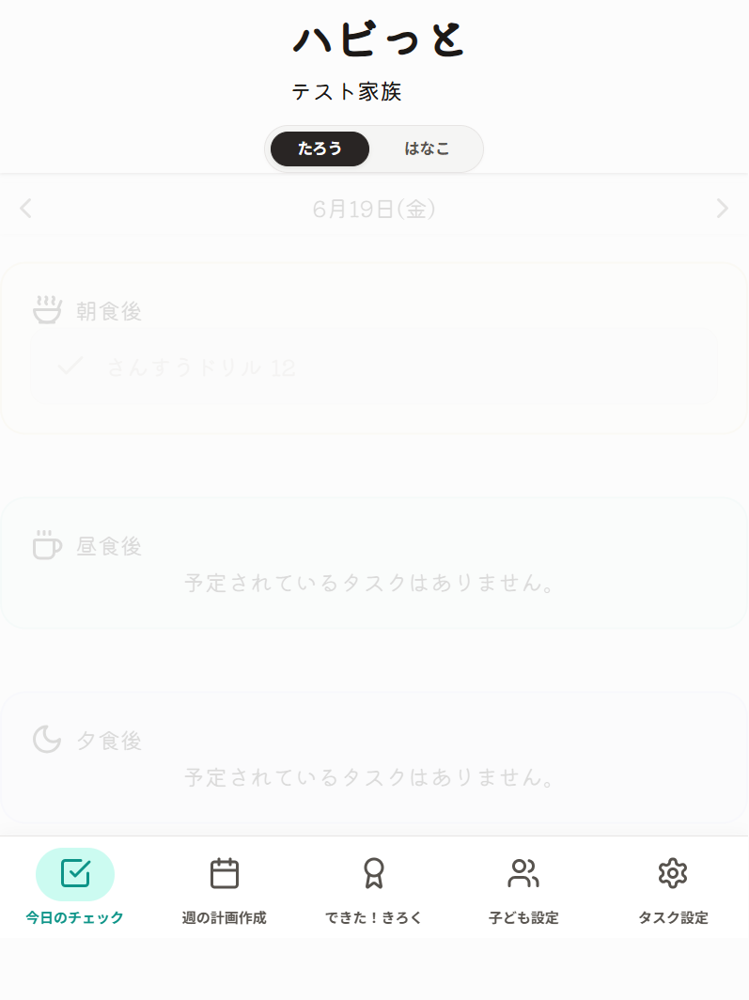
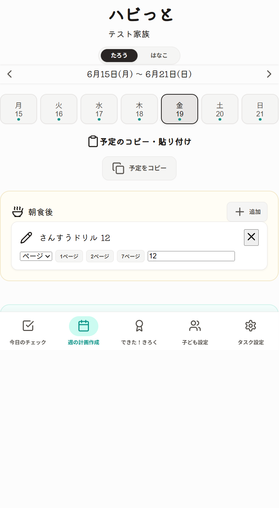
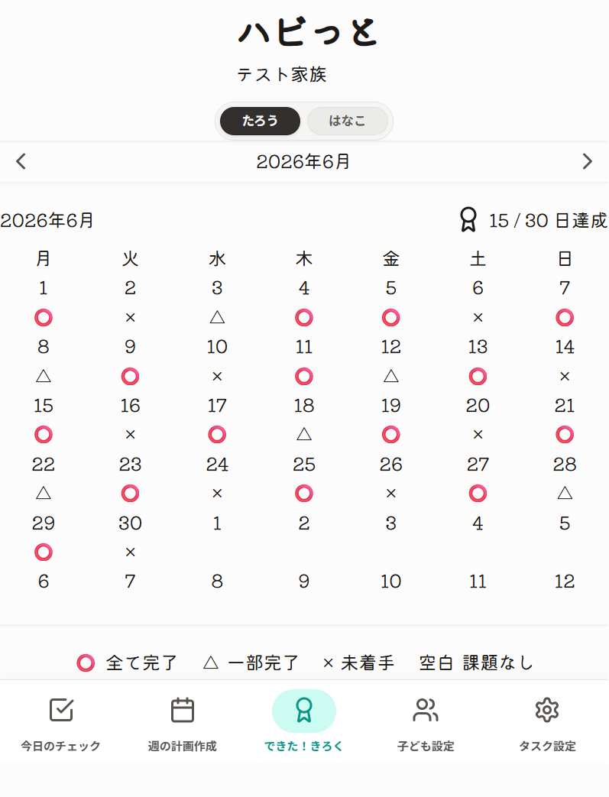
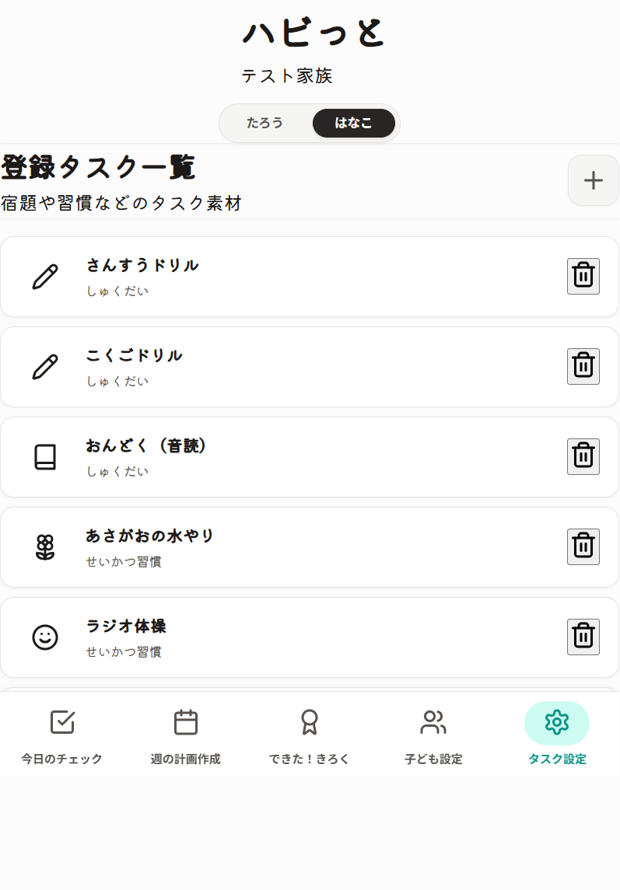
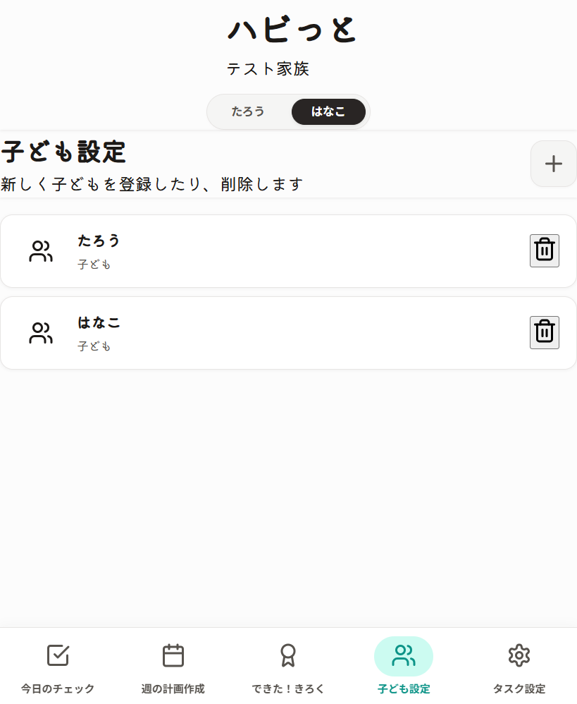

HABIT MANAGEMENT GUIDE
ハビっと ユーザー向け使い方手順書
ローカル起動した ハビっと の基本操作を、画面ごとにわかりやすくまとめた手順書です。ログインから毎日のチェック、月ごとの記録まで、この 1 枚で流れを追えるようにしています。
先に確認すること
- ログイン画面で家庭名と合言葉を入力します。
- 画面上部の子どもボタンで、操作したい子どもを選びます。
- 下部のナビゲーションで、使いたい画面を切り替えます。
ログイン用のテストデータは、ローカル D1 に入れてある「テスト家族」です。
LOGIN
ログイン
登録済みの家庭名と合言葉でログインします。新しく使い始める場合は、新規登録から家庭を作成してください。

DAILY CHECK
1. 今日のチェック
その日の朝食・昼食・夕食ごとに、タスクの完了状況を確認する画面です。
- 日付の左右ボタンで、確認したい日を切り替えます。
- 各食事ブロックで、タスクの完了を確認します。
- ページ数や回数などの記録も、この画面で入力します。
PLAN
2. 週の計画作成
1週間の予定をまとめて組み立てる画面です。タスクのコピーや貼り付けをするときに便利です。
- 上部の左右ボタンで、表示する週を切り替えます。
- 中央の曜日ボタンから日付を選びます。
- 予定のコピーや、他の日への貼り付けを行います。

CALENDAR
3. できた！きろく
月ごとの達成状況をカレンダーで確認する画面です。子どもごとの進捗をざっくり見たいときに使います。
- 上部の左右ボタンで月を切り替えます。
- ○、△、× のマークで、その日の進捗を見ます。
- 気になる日を押すと、その日のチェック画面へ移動できます。

TASKS
4. タスク設定
子どもごとのタスクを追加・削除する画面です。毎日のルーティンや宿題を登録します。
- タスクを追加したいときは、新規追加ボタンを押します。
- 名前やアイコン、カテゴリを設定します。
- 不要になったタスクは削除ボタンで消します。

CHILDREN
5. 子ども設定
家庭に紐づく子どもを登録・削除する画面です。家族ごとの管理を始めるときに使います。
- 新しい子どもを登録して、対象を増やします。
- 使わなくなった子どもは削除できます。
- 子どもを切り替えると、表示中のタスクや記録も切り替わります。

迷ったときの見方
- 左右のボタンは、日付や週、月を切り替える操作です。
- 画面下のナビゲーションで、今いる場所を切り替えられます。
- 画面上の子どもボタンで、対象の子どもを切り替えられます。